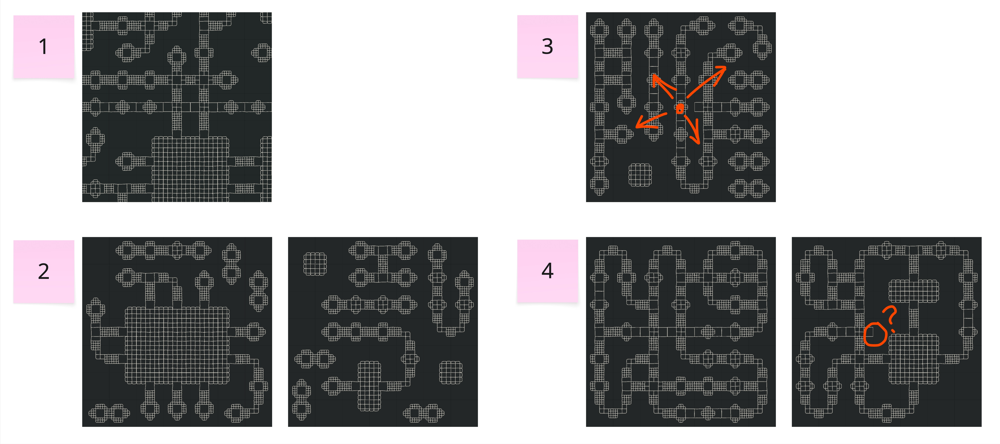
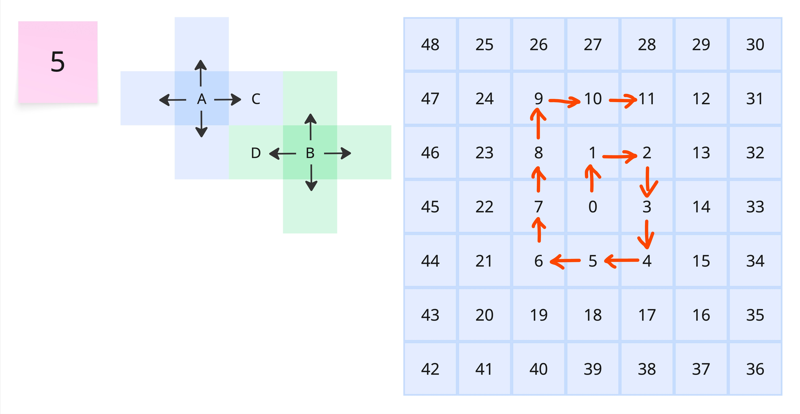
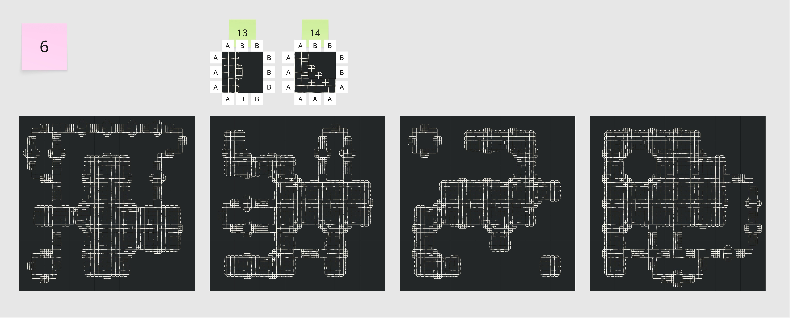

This project is inspired by real-world crochet works and attempts to create this type of pattern using a procedural approach.

Before using wave function collapse, first create initial tiles with different pins.

In the initial version, the pattern would extend beyond the canvas edge. After fixing this issue, another problem was discovered: some tiles would combine into isolated islands, unable to form a complete fabric. Therefore, version 3 attempted to solve this problem by fixing the generation of tiles from the center grid, and also tried to simply remove some initial tiles. In version 4, it was found that some tiles that could not be connected were now adjacent to each other. Following is the first version of the code in p5.js:
//sketch.js
// Array for tiles and tile images
const tiles = [];
const tileImages = [];
// Current state of the grid
let grid = [];
// Width and height of each cell
const DIM = 7;
// Load images
function preload() {
const path = "circuit";
for (let i = 0; i < 13; i++) {
tileImages[i] = loadImage(`${path}/${i}.png`);
}
}
function setup() {
createCanvas(600, 600);
// Create and label the tiles
tiles[0] = new Tile(tileImages[0], ["AAA", "AAA", "AAA", "AAA"]);
tiles[1] = new Tile(tileImages[1], ["BBB", "BBB", "BBB", "BBB"]);
tiles[2] = new Tile(tileImages[2], ["BBB", "BCB", "BBB", "BBB"]);
tiles[3] = new Tile(tileImages[3], ["BBB", "BDB", "BBB", "BDB"]);
tiles[4] = new Tile(tileImages[4], ["ABB", "BCB", "BBA", "AAA"]);
tiles[5] = new Tile(tileImages[5], ["ABB", "BBB", "BBB", "BBA"]);
tiles[6] = new Tile(tileImages[6], ["BBB", "BCB", "BBB", "BCB"]);
tiles[7] = new Tile(tileImages[7], ["BDB", "BCB", "BDB", "BCB"]);
tiles[8] = new Tile(tileImages[8], ["BDB", "BBB", "BCB", "BBB"]);
tiles[9] = new Tile(tileImages[9], ["BCB", "BCB", "BBB", "BCB"]);
tiles[10] = new Tile(tileImages[10], ["BCB", "BCB", "BCB", "BCB"]);
tiles[11] = new Tile(tileImages[11], ["BCB", "BCB", "BBB", "BBB"]);
tiles[12] = new Tile(tileImages[12], ["BBB", "BCB", "BBB", "BCB"]);
// Rotate tiles
// TODO: eliminate redundancy
for (let i = 2; i < 14; i++) {
for (let j = 1; j < 4; j++) {
tiles.push(tiles[i].rotate(j));
}
}
// Generate the adjacency rules based on edges
for (let i = 0; i < tiles.length; i++) {
const tile = tiles[i];
tile.analyze(tiles);
}
// Start over
startOver();
}
function startOver() {
// Create cell for each spot on the grid
for (let i = 0; i < DIM * DIM; i++) {
grid[i] = new Cell(tiles.length);
}
}
// Check if any element in arr is in valid, e.g.
// VALID: [0, 2]
// ARR: [0, 1, 2, 3, 4]
// result in removing 1, 3, 4
// Could use filter()!
function checkValid(arr, valid) {
for (let i = arr.length - 1; i >= 0; i--) {
let element = arr[i];
if (!valid.includes(element)) {
arr.splice(i, 1);
}
}
}
function draw() {
background(0);
// Draw the grid
const w = width / DIM;
const h = height / DIM;
for (let j = 0; j < DIM; j++) {
for (let i = 0; i < DIM; i++) {
let cell = grid[i + j * DIM];
if (cell.collapsed) {
let index = cell.options[0];
image(tiles[index].img, i * w, j * h, w, h);
} else {
fill(0);
stroke(100);
rect(i * w, j * h, w, h);
}
}
}
// Make a copy of grid
let gridCopy = grid.slice();
// Remove any collapsed cells
gridCopy = gridCopy.filter((a) => !a.collapsed);
// The algorithm has completed if everything is collapsed
if (grid.length == 0) {
return;
}
// Pick a cell with least entropy
// Sort by entropy
gridCopy.sort((a, b) => {
return a.options.length - b.options.length;
});
// Keep only the lowest entropy cells
let len = gridCopy[0].options.length;
let stopIndex = 0;
for (let i = 1; i < gridCopy.length; i++) {
if (gridCopy[i].options.length > len) {
stopIndex = i;
break;
}
}
if (stopIndex > 0) gridCopy.splice(stopIndex);
// Collapse a cell
const cell = random(gridCopy);
cell.collapsed = true;
const pick = random(cell.options);
if (pick === undefined) {
startOver();
return;
}
cell.options = [pick];
// Calculate entropy
const nextGrid = [];
for (let j = 0; j < DIM; j++) {
for (let i = 0; i < DIM; i++) {
let index = i + j * DIM;
if (grid[index].collapsed) {
nextGrid[index] = grid[index];
} else {
let options = new Array(tiles.length).fill(0).map((x, i) => i);
// Look up
if (j > 0) {
let up = grid[i + (j - 1) * DIM];
let validOptions = [];
for (let option of up.options) {
let valid = tiles[option].down;
validOptions = validOptions.concat(valid);
}
checkValid(options, validOptions);
}
// Look right
if (i < DIM - 1) {
let right = grid[i + 1 + j * DIM];
let validOptions = [];
for (let option of right.options) {
let valid = tiles[option].left;
validOptions = validOptions.concat(valid);
}
checkValid(options, validOptions);
}
// Look down
if (j < DIM - 1) {
let down = grid[i + (j + 1) * DIM];
let validOptions = [];
for (let option of down.options) {
let valid = tiles[option].up;
validOptions = validOptions.concat(valid);
}
checkValid(options, validOptions);
}
// Look left
if (i > 0) {
let left = grid[i - 1 + j * DIM];
let validOptions = [];
for (let option of left.options) {
let valid = tiles[option].right;
validOptions = validOptions.concat(valid);
}
checkValid(options, validOptions);
}
// I could immediately collapse if only one option left?
nextGrid[index] = new Cell(options);
}
}
}
grid = nextGrid;
}
//tile.js
// Function to reverse a string
function reverseString(s) {
let arr = s.split("");
arr = arr.reverse();
return arr.join("");
}
// Function to compare two edges
function compareEdge(a, b) {
return a == reverseString(b);
}
// Tile class
class Tile {
constructor(img, edges) {
// Image
this.img = img;
// Edges
this.edges = edges;
// Valid neighbors
this.up = [];
this.right = [];
this.down = [];
this.left = [];
}
// Find the valid neighbors
analyze(tiles) {
for (let i = 0; i < tiles.length; i++) {
let tile = tiles[i];
// UP
if (compareEdge(tile.edges[2], this.edges[0])) {
this.up.push(i);
}
// RIGHT
if (compareEdge(tile.edges[3], this.edges[1])) {
this.right.push(i);
}
// DOWN
if (compareEdge(tile.edges[0], this.edges[2])) {
this.down.push(i);
}
// LEFT
if (compareEdge(tile.edges[1], this.edges[3])) {
this.left.push(i);
}
}
}
// Rotate a tile and its edges to create a new one
rotate(num) {
// Draw new tile
const w = this.img.width;
const h = this.img.height;
const newImg = createGraphics(w, h);
newImg.imageMode(CENTER);
newImg.translate(w / 2, h / 2);
newImg.rotate(HALF_PI * num);
newImg.image(this.img, 0, 0);
// Rotate edges
const newEdges = [];
const len = this.edges.length;
for (let i = 0; i < len; i++) {
newEdges[i] = this.edges[(i - num + len) % len];
}
return new Tile(newImg, newEdges);
}
}

In the current version of the code, the tiles in the top, right, bottom, and left directions of A and B conform to the rules, but it cannot guarantee that there will be no conflicts between C and D. Therefore, the fifth version uses a spiral order as shown in the diagram to generate tiles in an attempt to avoid this problem.

Two new initial tiles were added to the fifth version to enrich the pattern styles and reduce the probability of isolated islands appearing. Following is the code for the fifth version:
//sketch.js
// Array for tiles and tile images
const tiles = [];
const tileImages = [];
// Current state of the grid
let grid = [];
// Width and height of each cell
const DIM = 7;
// ====== Boundary rule ======
const BOUNDARY_EDGE = "BBB";
// Choose which tile is considered "empty/background".
const EMPTY_TILE_INDEX = 1;
function isPatternTile(tileIndex) {
return tileIndex !== EMPTY_TILE_INDEX;
}
// Restrict options for boundary cells so the OUTER edges are BBB
function applyBoundaryConstraint(options, x, y) {
return options.filter((tIndex) => {
const e = tiles[tIndex].edges; // [up, right, down, left]
if (y === 0 && e[0] !== BOUNDARY_EDGE) return false; // top
if (y === DIM - 1 && e[2] !== BOUNDARY_EDGE) return false; // bottom
if (x === 0 && e[3] !== BOUNDARY_EDGE) return false; // left
if (x === DIM - 1 && e[1] !== BOUNDARY_EDGE) return false; // right
return true;
});
}
// ====== Frontier-growth helpers ======
function hasAnyCollapsedPattern() {
for (let idx = 0; idx < grid.length; idx++) {
if (grid[idx].collapsed && isPatternTile(grid[idx].options[0])) return true;
}
return false;
}
function hasCollapsedPatternNeighbor(x, y) {
const dirs = [
[0, -1], [1, 0], [0, 1], [-1, 0]
];
for (const [dx, dy] of dirs) {
const nx = x + dx;
const ny = y + dy;
if (nx < 0 || nx >= DIM || ny < 0 || ny >= DIM) continue;
const nCell = grid[nx + ny * DIM];
if (nCell.collapsed && isPatternTile(nCell.options[0])) return true;
}
return false;
}
function collapseCellToEmpty(cell) {
cell.collapsed = true;
cell.options = [EMPTY_TILE_INDEX];
}
// ====== Spiral order (0 -> 48 style) ======
let ORDER = [];
let orderPtr = 0;
function generateSpiralOrder(dim) {
const cx = Math.floor(dim / 2);
const cy = Math.floor(dim / 2);
const result = [];
let x = cx, y = cy;
result.push({ x, y, idx: x + y * dim });
const dirs = [
[1, 0], // right
[0, 1], // down
[-1, 0], // left
[0, -1], // up
];
let stepLen = 1;
let dirIndex = 0;
while (result.length < dim * dim) {
for (let repeat = 0; repeat < 2; repeat++) {
const [dx, dy] = dirs[dirIndex % 4];
for (let s = 0; s < stepLen; s++) {
x += dx;
y += dy;
if (x >= 0 && x < dim && y >= 0 && y < dim) {
result.push({ x, y, idx: x + y * dim });
if (result.length >= dim * dim) return result;
}
}
dirIndex++;
}
stepLen++;
}
return result;
}
// Pick next cell by spiral order, but still enforce "single continuous piece"
function pickNextBySpiralAndFrontier() {
const patternExists = hasAnyCollapsedPattern();
while (orderPtr < ORDER.length) {
const o = ORDER[orderPtr];
const c = grid[o.idx];
if (c.collapsed) {
orderPtr++;
continue;
}
// Keep a single continuous piece: the new cell must touch the existing pattern
if (patternExists && !hasCollapsedPatternNeighbor(o.x, o.y)) {
orderPtr++;
continue;
}
return { cell: c, i: o.x, j: o.y, idx: o.idx };
}
return null;
}
// ====== LOOKAHEAD: try a tile -> propagate -> if any cell has 0 options, rollback and try next ======
function cloneGridState() {
return grid.map(c => ({
collapsed: c.collapsed,
options: c.options.slice()
}));
}
function restoreGridState(state) {
for (let i = 0; i < grid.length; i++) {
grid[i].collapsed = state[i].collapsed;
grid[i].options = state[i].options.slice();
}
}
function gridHasContradiction() {
for (let i = 0; i < grid.length; i++) {
// uncollapsed but no options => contradiction
if (!grid[i].collapsed && grid[i].options.length === 0) return true;
// collapsed but no option => also invalid
if (grid[i].collapsed && grid[i].options.length === 0) return true;
}
return false;
}
// Collapse a normal cell: prefer non-empty; for each candidate do "try + propagate" and accept only if no contradiction
function collapseCellPreferPatternWithLookahead(cell) {
const patternOptions = cell.options.filter(isPatternTile);
const emptyOptions = cell.options.filter(t => !isPatternTile(t));
let candidates = patternOptions.length ? patternOptions.slice() : cell.options.slice();
// randomize candidates to avoid always picking the same structure
candidates = shuffle(candidates, true);
for (const cand of candidates) {
const snapshot = cloneGridState();
cell.collapsed = true;
cell.options = [cand];
propagateConstraints();
if (gridHasContradiction()) {
restoreGridState(snapshot);
continue;
}
return true;
}
// Optional: if pattern candidates fail, try empty candidates to reduce the chance of getting stuck
if (patternOptions.length > 0 && emptyOptions.length > 0) {
const emptyCandidates = shuffle(emptyOptions.slice(), true);
for (const cand of emptyCandidates) {
const snapshot = cloneGridState();
cell.collapsed = true;
cell.options = [cand];
propagateConstraints();
if (gridHasContradiction()) {
restoreGridState(snapshot);
continue;
}
return true;
}
}
return false;
}
// Seed-only collapse (only allow picking from allowedSeedTiles)
const allowedSeedTiles = [0, 7, 10];
function collapseSeedFromAllowedWithLookahead(seedCell) {
// Only pick from allowedSeedTiles, and it must be legal within seedCell.options
let candidates = allowedSeedTiles.filter(t => seedCell.options.includes(t));
candidates = shuffle(candidates, true);
for (const cand of candidates) {
const snapshot = cloneGridState();
seedCell.collapsed = true;
seedCell.options = [cand];
propagateConstraints();
if (gridHasContradiction()) {
restoreGridState(snapshot);
continue;
}
return true;
}
return false;
}
// Load images
function preload() {
const path = "circuit";
for (let i = 0; i < 15; i++) {
tileImages[i] = loadImage(
`${path}/${i}.png`,
() => console.log("loaded:", i),
() => console.error("FAILED:", i)
);
}
}
function setup() {
createCanvas(600, 600);
// Create and label the tiles
tiles[0] = new Tile(tileImages[0], ["AAA", "AAA", "AAA", "AAA"]);
tiles[1] = new Tile(tileImages[1], ["BBB", "BBB", "BBB", "BBB"]);
// NOTE: You are currently reusing tileImages[7] here instead of tileImages[2].
// If you want a true "tile 2", change it back to tileImages[2] with its own edges.
tiles[2] = new Tile(
//tileImages[2], ["BBB", "BCB", "BBB", "BBB"]
tileImages[7], ["BDB", "BCB", "BDB", "BCB"]
);
tiles[3] = new Tile(tileImages[3], ["BBB", "BDB", "BBB", "BDB"]);
tiles[4] = new Tile(tileImages[4], ["ABB", "BCB", "BBA", "AAA"]);
tiles[5] = new Tile(tileImages[5], ["ABB", "BBB", "BBB", "BBA"]);
tiles[6] = new Tile(tileImages[6], ["BBB", "BCB", "BBB", "BCB"]);
tiles[7] = new Tile(tileImages[7], ["BDB", "BCB", "BDB", "BCB"]);
tiles[8] = new Tile(tileImages[8], ["BDB", "BBB", "BCB", "BBB"]);
tiles[9] = new Tile(tileImages[9], ["BCB", "BCB", "BBB", "BCB"]);
tiles[10] = new Tile(tileImages[10], ["BCB", "BCB", "BCB", "BCB"]);
tiles[11] = new Tile(tileImages[11], ["BCB", "BCB", "BBB", "BBB"]);
tiles[12] = new Tile(tileImages[12], ["BBB", "BCB", "BBB", "BCB"]);
// NEW: add 13.png and 14.png
tiles[13] = new Tile(tileImages[13], ["ABB", "BBB", "BBA", "AAA"]);
tiles[14] = new Tile(tileImages[14], ["ABB", "BBA", "AAA", "AAA"]);
// Rotate tiles
// CHANGED: rotate 2..14 (inclusive), so use i < 15
for (let i = 2; i < 15; i++) {
for (let j = 1; j < 4; j++) {
tiles.push(tiles[i].rotate(j));
}
}
// Generate adjacency rules
for (let i = 0; i < tiles.length; i++) {
tiles[i].analyze(tiles);
}
startOver();
}
function startOver() {
// init grid
for (let j = 0; j < DIM; j++) {
for (let i = 0; i < DIM; i++) {
const index = i + j * DIM;
let options = [];
for (let k = 0; k < tiles.length; k++) options.push(k);
options = applyBoundaryConstraint(options, i, j);
if (options.length === 0) {
for (let k = 0; k < tiles.length; k++) options.push(k);
}
grid[index] = new Cell(options);
}
}
// init spiral
ORDER = generateSpiralOrder(DIM);
orderPtr = 0;
// seed center
const sx = floor(DIM / 2);
const sy = floor(DIM / 2);
const sIndex = sx + sy * DIM;
const seedCell = grid[sIndex];
// Only allow seed from tiles[0], tiles[7], tiles[10]
const okSeed = collapseSeedFromAllowedWithLookahead(seedCell);
if (!okSeed) {
const okFallback = collapseCellPreferPatternWithLookahead(seedCell);
if (!okFallback) {
collapseCellToEmpty(seedCell);
propagateConstraints();
}
}
}
// Check if any element in arr is in valid
function checkValid(arr, valid) {
for (let i = arr.length - 1; i >= 0; i--) {
const element = arr[i];
if (!valid.includes(element)) arr.splice(i, 1);
}
}
function draw() {
background(0);
// Draw grid
const w = width / DIM;
const h = height / DIM;
for (let j = 0; j < DIM; j++) {
for (let i = 0; i < DIM; i++) {
const cell = grid[i + j * DIM];
if (cell.collapsed) {
const index = cell.options[0];
image(tiles[index].img, i * w, j * h, w, h);
} else {
fill(0);
stroke(100);
rect(i * w, j * h, w, h);
}
}
}
// stop if done
let anyUncollapsed = false;
for (let idx = 0; idx < grid.length; idx++) {
if (!grid[idx].collapsed) { anyUncollapsed = true; break; }
}
if (!anyUncollapsed) return;
const pickObj = pickNextBySpiralAndFrontier();
if (!pickObj) {
// frontier exhausted: fill remaining with EMPTY to avoid a second island
for (let k = 0; k < grid.length; k++) {
if (!grid[k].collapsed) collapseCellToEmpty(grid[k]);
}
propagateConstraints();
return;
}
const targetCell = pickObj.cell;
// collapse with lookahead
const ok = collapseCellPreferPatternWithLookahead(targetCell);
if (!ok) {
startOver();
return;
}
}
// ====== Propagation ======
function propagateConstraints() {
const nextGrid = [];
for (let j = 0; j < DIM; j++) {
for (let i = 0; i < DIM; i++) {
const index = i + j * DIM;
if (grid[index].collapsed) {
nextGrid[index] = grid[index];
} else {
let options = new Array(tiles.length).fill(0).map((x, idx) => idx);
// Look up
if (j > 0) {
const up = grid[i + (j - 1) * DIM];
let validOptions = [];
for (const option of up.options) {
validOptions = validOptions.concat(tiles[option].down);
}
checkValid(options, validOptions);
}
// Look right
if (i < DIM - 1) {
const right = grid[i + 1 + j * DIM];
let validOptions = [];
for (const option of right.options) {
validOptions = validOptions.concat(tiles[option].left);
}
checkValid(options, validOptions);
}
// Look down
if (j < DIM - 1) {
const down = grid[i + (j + 1) * DIM];
let validOptions = [];
for (const option of down.options) {
validOptions = validOptions.concat(tiles[option].up);
}
checkValid(options, validOptions);
}
// Look left
if (i > 0) {
const left = grid[i - 1 + j * DIM];
let validOptions = [];
for (const option of left.options) {
validOptions = validOptions.concat(tiles[option].right);
}
checkValid(options, validOptions);
}
// boundary constraint
options = applyBoundaryConstraint(options, i, j);
nextGrid[index] = new Cell(options);
}
}
}
grid = nextGrid;
}
//tile.js
// Function to reverse a string
function reverseString(s) {
let arr = s.split("");
arr = arr.reverse();
return arr.join("");
}
// Function to compare two edges
function compareEdge(a, b) {
return a == reverseString(b);
}
// Tile class
class Tile {
constructor(img, edges) {
// Image
this.img = img;
// Edges
this.edges = edges;
// Valid neighbors
this.up = [];
this.right = [];
this.down = [];
this.left = [];
}
// Find the valid neighbors
analyze(tiles) {
for (let i = 0; i < tiles.length; i++) {
let tile = tiles[i];
// UP
if (compareEdge(tile.edges[2], this.edges[0])) {
this.up.push(i);
}
// RIGHT
if (compareEdge(tile.edges[3], this.edges[1])) {
this.right.push(i);
}
// DOWN
if (compareEdge(tile.edges[0], this.edges[2])) {
this.down.push(i);
}
// LEFT
if (compareEdge(tile.edges[1], this.edges[3])) {
this.left.push(i);
}
}
}
// Rotate a tile and its edges to create a new one
rotate(num) {
// Draw new tile
const w = this.img.width;
const h = this.img.height;
const newImg = createGraphics(w, h);
newImg.imageMode(CENTER);
newImg.translate(w / 2, h / 2);
newImg.rotate(HALF_PI * num);
newImg.image(this.img, 0, 0);
// Rotate edges
const newEdges = [];
const len = this.edges.length;
for (let i = 0; i < len; i++) {
newEdges[i] = this.edges[(i - num + len) % len];
}
return new Tile(newImg, newEdges);
}
}
The p5.js link for this project: https://editor.p5js.org/SuJiaying/sketches/8geanvgw1